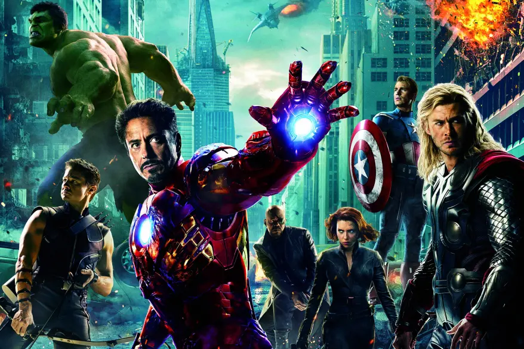

Watching the marvel movies in release order is always fun, but the best way to watch the MCU to get the best viewing experience is in chronological order. There has been 35 movies made in the MCU, and each one is set in a different time, or even overlapping depending on the events of that movie.
My favorite MCU movies have changed over the years as new movies have been released, along with the new shows on Disney Plus. Down below, I'll be ranking my top 5 favorite MCU movies/shows.
| Movie/Show | IMDB Link |
|---|---|
| Captain America: The Winter Soldier | IMDB: Captain America: The Winter Soldier |
| Guardians of the Galaxy Vol. 3 | IMDB: Guardians of the Galaxy Vol. 3 |
| Loki | IMDB: Loki |
| The Avengers | IMDB: The Avengers |
| Moon Knight | IMDB: Moon Knight |